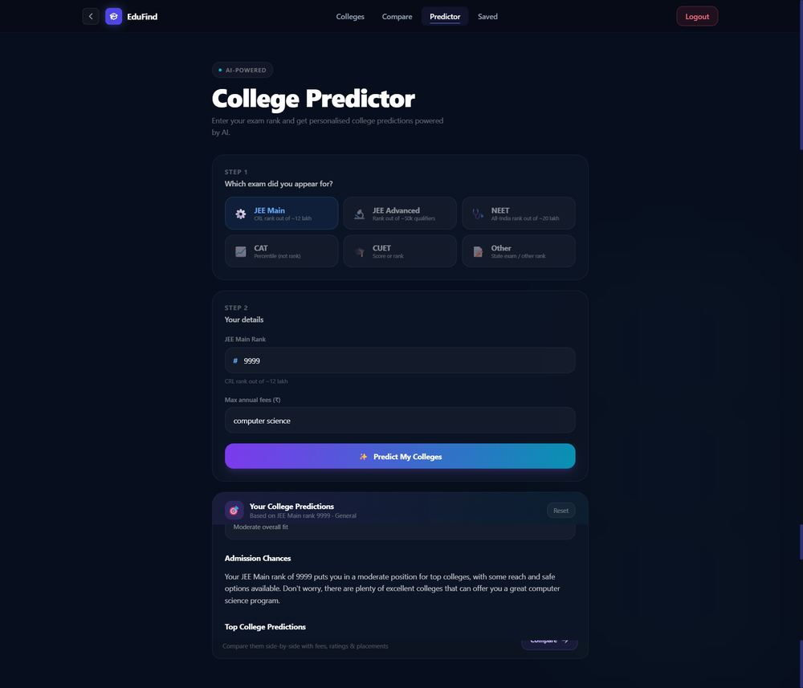
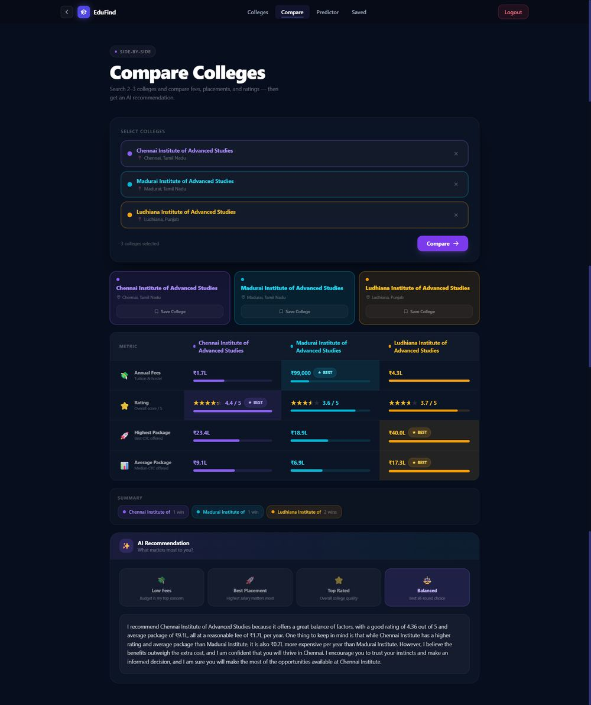

🟢 Live in production on Vercel
Collexa — College Decision Intelligence Platform
A Next.js App Router platform for searching, comparing and predicting college admission rank, backed by a Zod-validated API layer and HTTP-only JWT cookie authentication.

Problem
With thousands of colleges, shifting fees, and confusing rank cutoffs, students end up piecing together decisions from scattered PDFs, forums, and outdated rank-predictor sites.
Solution
A Next.js App Router monolith (TypeScript, Prisma, PostgreSQL) that lets students search & filter colleges, run a weighted rank-based admission predictor, compare shortlists side by side, and get AI-assisted guidance — all behind Zod-validated APIs and HTTP-only JWT cookie auth.
Features
- Search & filter across colleges by state, type & fees
- Weighted rank-prediction engine (rank, budget & placement scoring)
- Side-by-side college comparison tool
- AI guidance chat via a server-side Groq API proxy
- JWT auth in HTTP-only cookies + middleware-enforced access control
- Zod-validated API routes with Prisma ORM over PostgreSQL
- Email-based password reset flow (Resend) with expiring tokens
Architecture
- Next.js App Router as the single composition layer —
src/app/apiholds route handlers colocated with the pages that call them middleware.tscentralizes access control, checking the JWT cookie before requests reach any protected route handler- Relational schema (Prisma):
User,College,Course,Review,SavedCollege(uniqueuserId+collegeId),PasswordResetToken - Recommendation weights (rank/fees/placement) are environment-configurable, not hardcoded
Technology Stack
Challenges
- Indexed lookup fields on college name, location, rating, and user-saved records for fast filtered reads
- Cascade-safe deletes on
Course/Reviewso removing a college doesn't orphan child records - Global Prisma Client reuse in development prevents connection-pool churn on hot reload
- Password reset tokens are single-use and expiring — no long-lived reset links
Results / Impact
14
API Routes
6
Prisma Models
3
Comparison Slots
1hr
Reset Token TTL

